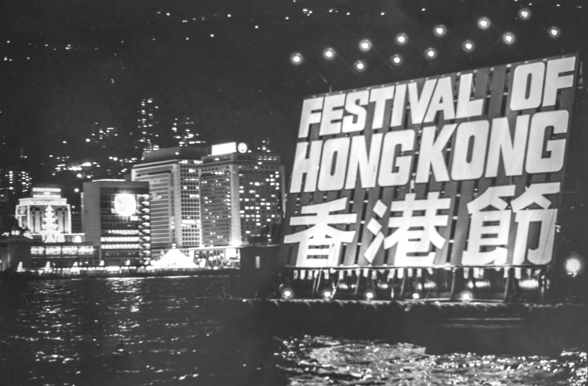

2021
Archival Research: Festival of Hong Kong - Brian KWOK, Project Leader, Clive NG, Lead Project Associate (Research)
The late-1960s in Hong Kong is also regarded as ‘an intense era’ because of the great disturbance brought to the society by a series of riots. In response to this, the British colonial government launched the Festival of Hong Kong in subsequent years. Some commentators believed besides being a recreational activity, the festival was also the government's attempts at alleviating distress and fostering a sense of identity among Hong Kong people. Nevertheless, the festival was the first and the largest official entertainment event in Hong Kong history, which utilised different design elements and media to establish the distinct visual identity. The festival’s logo was a rubber ball with alternating and white stripes—a clever motif as its elasticity symbolised the resilience and extraordinary adaptability of Hong Kong people. This is the second exhibition in our ‘Designing the Spectacle’ series. Setting our anchor in Hong Kong, we will explore the intricate relationship between designs for Festival of Hong Kong and the society. Moreover, it is not the exhibition’s purpose to romanticise the good old days of Hong Kong, nor is it aiming to reconstruct the merry scenes of the festival. Instead, we focus on investigating the role of design, its application, function and influence in a turbulent society. It is hoped that this exhibition will inspire us to reflect on the limitless roles design can still play even during disturbances in our society today. On the occasion that this year is the 50th anniversary of the Festival of Hong Kong, let us look back on the ‘rubber ball’—an exemplar of our optimism and elasticity—to cheer on ourselves with some positive mindsets during this difficult time in our society.
The 1960s was a turbulent era in Hong Kong, with aggravated public discontent towards the British colonial government. This is led by prevalent corruption, intense rivalry between the left wing and the right wing, as well as the oppression from the government. In 1966, a riot broke out in response to the increase in fare of the Star Ferry. In 1967, a labour dispute broke out in a plastic flower factory, which later escalated to violent clashes between the management and the picketing workers. At the same time, endless real and decoy bombs were planted throughout the city. Following the police’s failed attempt at negotiating with the workers, riot police were called to take action, which left many workers arrested for offenses such as illegal assembly, bodily assaults and criminal intimidation; and many more injured.
The waves of bombings did not subside until mid December, when Chinese Premier Zhou Enlai ordered the leftists to stop all bombings that the riots of 8 months finally came to an end. The government launched the first Festival of Hong Kong in 1969, in a bid to alleviate social tensions and foster a sense of belonging and identity among Hong Kong people.

The Festival of Hong Kong was held three times in 1969, 1971 and 1973 for around one week during November and December. Citywide leisure activities, including exhibitions, sports competitions, performances and parades were organised in community centres, malls and main roads. Hong Kong had been deemed as ‘a borrowed place’ with ‘borrowed time’ ever since she became a British colony. This is the reason why the Festival of Hong Kong holds such great significance in our history, as it marks the first active attempt by the British colonial government to foster a sense of belonging as ‘Hongkongers’ to weaken that of ‘the colonised’, in a bid to promote social stability after the 1967 riots. This triumphant and celebratory festival not only united, but it also helped build a sense of identity among the Hong Kong people gradually. Publicity materials used during the Festival reached the pinnacle of government propaganda, and it is easy to observe the important role communication design has always played in our society through studying its application in history.
The first Festival of Hong Kong was held in 1969 and lasted for ten days, featuring specially designed illuminating towers and lighting manifested all around Hong Kong. Over 50 celebratory events were held citywide, making it the largest and most extensive event of its kind in history. In Hong Kong Island, fashion shows were organised in Statue Square; fire float water displays illuminated various harbour points; while military performances and carnivals were a common scene.
In Kowloon, Shaw Studio’s open air theatre, variety shows as well as district-based track and field events or ball games all appealed to the young people; while operas and kids’ fun fairs enlivened Tsuen Wan in the New Territories. Although more than a million dollars were put into the making of the Festival of Hong Kong, it was so successful that it was reported as ‘a worthwhile event that showcased the talents of Hong Kong artists’ by the Festival of Hong Kong Commemorative Magazine.
A range of Festival-of-Hong-Kong-themed products, including stamps, postcards, titles, posters and photo albums were issued in commemoration of the Festival over the years. These products showed just how design could effortlessly integrate the series of activities that seem to be of different scales, together. Although the visual elements employed in these products were simple, they were undeniably one of the most effective pillars in connecting Hongkongers and developing our sense of identity at that time.
Public policy and application of design - Dr. Gary Tang (Scholar)
Dr. Gary Tang is a lecturer in the Department of Social Science in the Hang Seng University of Hong Kong, who primarily conducts research in political communication and social media. He discussed that Hong Kong has always been a ‘city of immigrants’ comprising of residents from two waves of migrations—one from the establishment of the People’s Republic of China and one from the Cultural Revolution. These batches of immigrants attach their spiritual selves as Chinese generally, which is the reason why they name their clansmen associations after ‘expatriate in Hong Kong‘ and call one another as ‘expatriated clansmen’.
The British colonial government was only enlightened about the public’s discontent towards the government after the 1967 riots—the fact that the majority of residents took refuge in Hong Kong from the Mainland did not necessarily means that they had accepted to be ruled by the British colonial government. Therefore, the government re-evaluated its policy objectives and actively ameliorate her governance, such as establishing the Independent Commission Against Corruption (ICAC), implementing nine years of free education and setting up statutory holidays, etc. The hosting of ‘Festival of Hong Kong’ was precisely a government’s bid after the 1967 riots to establish ‘a Hong Kong community’, which could not only let off the youngsters’ steam, but also showed the government’s determination to turn over a new leaf.
Nevertheless, the reason why promotions and movements during the governance of the British colonial government were considered effective and up to par can be attributed to the fact that British modern design after the Second World War focuses on functionality and it was applied appropriately to achieve the ideal effects. This design concept is a lot different from that of the Hong Kong government now—the former focused on people and interacted with citizens through organisations like the Urban Council in order to make people-oriented designs and aesthetics; while the latter one takes estimated costs and following rigid old systems as prerequisites, as well as only allow bureaucrats to be involved in decision-making, which leads to the disappearance of ‘aesthetics’ in public administration.
Visual communication of Festival of Hong Kong's posterMr. Sandy Choi
Sandy Choi is a renowned Hong Kong designer and creative director. Graduated from Saint Martin’s School of Art, London, he had worked in several international design firms before establishing his personal design consultancy, Sandy Choi Associates Limited Hong Kong, in 1997.
Among all designs of Festival of Hong Kong, the 1973 commemorative stamps were the most memorable to Choi. He recalled that collecting stamps was popular during that time, and some stamps’ designs had left quite an impression in his mind, including the tenth anniversary Red Cross commemorative stamp and the first year-of-the-rat stamp that was designed by the godfather of graphic design, Kan Tai Keung.
Looking back on the contemporary designs during the 60s and 70s on a global level, and comparing the 1964 Tokyo Olympics and 1970 Osaka Universal Exposition with the use of fonts and layout in posters of Festival of Hong Kong, it can be seen that the visual identity design standard of Hong Kong was slightly inferior. Nevertheless, Choi believes that the overall identity of Festival of Hong Kong was fairly satisfactory. The success of the logo used in the Festival can be attributed to some very important elements — which is to provide the audience with a ‘good view’ as well as to give others a sense of positivity by the use of colours and shapes. In order to design a successful visual identity, designers must uncover the event’s characteristics or personalities and transmit them effectively. A well-designed logo must also possess the above qualities in order to be the center of a large event and to be applied in different times, formats and occasions.
Visual communication of Festival of Hong Kong's poster - Mr. John Wu(Collector)
John Wu is a Hong Kong designer and collector who holds extraordinary enthusiasm and insights to the history of local graphic design. All exhibits showcased in this exhibition belong to Wu’s valuable personal collection.He is believed to own the most complete and largest amount of relics from the Festival of Hong Kong.
Wu recalls that he first came across the designs of Festival of Hong Kong in 2017. He discovered that the entire visual identity was constructed only by the simple combination of three colours — black, white and an almost neon orange, which was a rare choice of colour back in the 60s. These elements immensely appealed to his sense of design sense, which led him to embark on an almost two-year collecting journey. He has collected around 300 relics of the Festival of Hong Kong and found out about quite a number of stories behind them.
From the perspective of appreciating the designs, Wu gained multifarious inspirations for his own design work from his vast collection. For instance, through comparing the ‘first day covers’ designed by different organisations for the festivals in different years, Wu observed how designers interpreted the ‘beach ball’ in various ways, as well as how different colours, printing or processing methods were used to achieve the ideal effects.
Our society today, on the other hand, prioritises efficiency and speed over everything else, which in turn sacrifices the pursuits of aesthetics and quality. These collections not only serve as records for Hong Kong’s design history, but they also provide opportunities for current designers to reflect and learn.
Design and society - Mr. Ken Li (Blogger)
Ken Li is a Communication Design programme guest lecturer of School of Design, HKPolyU. He has discussed the relationship between design and society on occasion in the media. He believes that graphic design has always played an indispensable role in our society and history, particularly when used as the government’s propaganda. For instance, by manipulating propaganda to boast about its achivements, the Nazi Party glorified its extreme agression as mere liberation in order to promote enlistments and donations.
Another epitome of the application of graphic design is the ‘KEEP CALM AND CARRY ON’ poster displayed on every corner of the country before World War II, which raised the morale of the British public speedily in a time before the emergence of the digital media. The successes of the posters, Ken believed, could all be attributed to the relatively straightforward and appealing visual elements employed. This may also be the reason why posters for the Festival of Hong Kong in the 1960s were all simple-designed, yet still effective in bringing out the joyful and relaxing atmosphere of the event
The application of visual identity
In preparation for the Festival of Hong Kong, apart from the planning and coordination primarily executed by the Festival of Hong Kong Steering Committee, a Decorations Committee was also set up to coordinate decoration design within the city during the festival. These festival-themed adornments were manifested in every district to create a joyous atmosphere so that the citizens could feel the festival’s approaching with anticipation.
Among the multifarious decorations, the spotlight of them all would be ‘the beach ball’, the festival’s logo specially designed by the Information Services Department. As the festival’s primary visual identity, this motif was extensively applied to different publicity materials and facilities— outdoor lighting, venue’s backdrops, banners, flags, commemorative stamps, first day cover, invitation cards, raffle tickets, etc. Wherever this ‘rubber ball’ was seen, an ambience of joy, relaxation and entertainment pervaded.
‘The Ball’ is incredibly bouncy—it bounces right back and restores its original shape once it has been tossed out—this symbolises Hong Kong’s resilience and adaptability. Hong Kong society has dealt severe economic and trade blows, and will continue to receive such blows in the future. However, with confidence and perseverance, Hong Kong people can surely overcome any difficulties.
—Festival of Hong Kong 1971
The logo of the festival of Hong Kong was interpreted in a couple different ways—‘beach ball’, ‘rubber ball’, ‘watermelon ball’, etc. On the surface, these names come as no surprise considering the plastic manufacturing industry was booming during the 60s and 70s in Hong Kong. However, in reality, this logo held a much deeper significance—it was actually inspired by Hong Kong’s floral emblem, Bauhinia blakeana.
The petals of a bauhinia can be spread out and recombined together to form a sphere. Slightly twist and simplify the petals’ outlines to accentuate their streamlined curves, the festival’s logo is born. Although the logo may seem like a giant rubber ball at first sight, it is per se a bauhinia that encompassed the dynamism, elasticity, mellowness and joyousness of a rubber ball.

Visual identity
Because of their similarities in the choice of colours and the use of lines, Hong Kong citizens often compared the logo to the ‘watermelon ball’, a red and white toy ball that was manufactured by industrialist Chiang Chen since 1959. Hong Kong designer Sandy Choi believes that a successful visual identity should bring out positivity—a feature that is exemplified by the logo.The four curvy patterns and the centre of spirals are situated in the upper hemisphere, which visually implies the ball is rotating in a clockwise direction; together with the fact that the ‘watermelon ball’ was a collective joyful childhood memories among Hong Kong people, it is no wonder that this festival logo gives viewers a sense of joyousness. By taking inspirations from an energetic bouncing ball and our city’s floral emblem the Bauhinia, this festival’s logo captures the essence of Hong Kong people’s ever-improving and persevering nature.
Typographic usage
The Chinese title uses an extra bold and condensed typeface. The visual focus is shifted towards the lower part of the three letters, which are round-trimmed and larger in size when compared to the upper part. This is especially apparent in the letter‘Kong’(港) - strokes such as ‘dot(’點),‘upward horizontal’ (挑), and ‘throw(’ 撇)all spread outwards, an adaptation to go in line with the radiative effect of spiral patterns.On the other hand, the English title employs ‘Compacta’, a font that was designed by Fred Lambert in 1963. It was the first original typeface design by the dry-transfer lettering company Letraset, which was widely popular among artists and designers as it is easy to be applied in printing production. Letters of Compacta tend to be narrower and more condensed. By the looks of it, the titles of both languages are of similar thickness and seems more compatible when put together. However, it fails to achieve the same legibility as its Chinese counterpart.The design of the poster is kept unsophisticated without any unnecessary decorations— it only used duo-colour printing as well as only features minimalistic content like the sphere, bilingual titles and time description. Yet, if we pay attention to the ratio of patterns and the design of typefaces, the poster can still bring out the festival’s ambience.
Arthur Hacker’s influence on the designs of Hong Kong Government’s campaigns was unprecedentedly remarkable. His forms of visual communication had effectively left a lasting impression in the minds of generations of Hong Kong people. His most well-known work of art was the wicked cartoon character ’Litter Bug’ (Lap Sap Chung) created for ’Clean Hong Kong’ campaign in the 1970s.
About Arthur Hacker (1932-2013)
Hacker was born in Wiltshire, England in 1932 and graduated from the Royal College of Art in 1958. Before Hacker served for 22 years in the Hong Kong Information Services Department (HKISD) since 1967, he had worked as an art director in a London record company and the London Evening Standard. As the art and creative director, and later a Chief Information Officer in HKISD, Hacker’s more famous creations include the fourth and fifth issues of Hong Kong Queen Elizabeth II definitive stamps, ‘Anti-smoking Campaign’ and ‘Clean Hong Kong Campaign’. He had also published several titles dedicated to Hong Kong’s history through stories of his works and personal collections, including The Hong Kong visitors book: a historical who’s who (1997) and Hong Kong in posters: a history of public service advertising (1989).